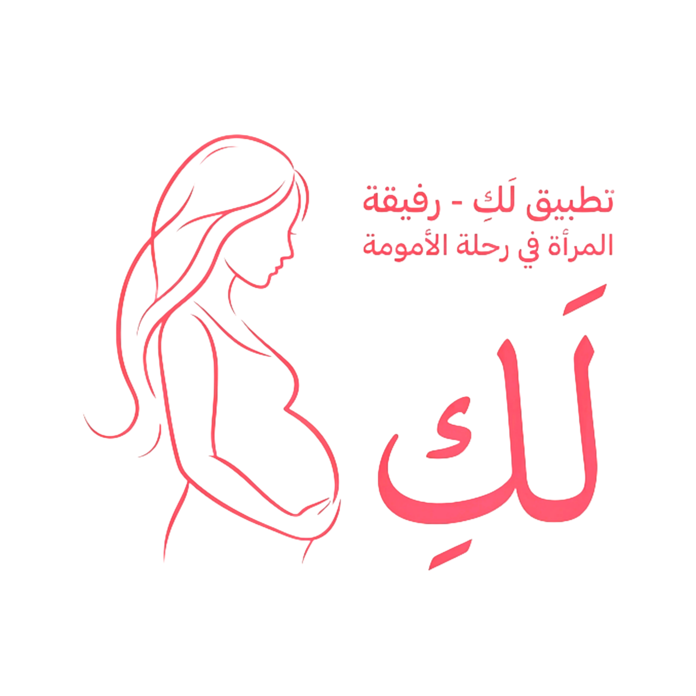

العيادة الرقمية لَكِ
ابدئي الآن

العيادة الرقمية لَكِ
تسجيل الدخول
أدخلي بيانات حسابك
دخول
ليس لديك حساب؟
إنشاء حساب
المتابعة بدون حساب
العيادة الرقمية لَكِ
إنشاء حساب
أدخلي بياناتك للتسجيل
بإنشاء الحساب توافقين على معالجة بياناتك الصحية لتقديم الخدمة، ولا تُتاح إلا للمختصين المخولين.
إنشاء حساب
لديك حساب؟
تسجيل الدخول
مرحباً بكِ!
كيف يمكننا مساعدتكِ؟
متابعة الحمل
استشارة نفسية
صحتك النفسية أولوية
جلسات مع متخصصين للحوامل والأمهات
احجزي جلسة فيديو
الموضوعات الشائعة
• القلق والتوتر • الاكتئاب • تقلبات المزاج
جلسة فيديو
أنتِ
ما بعد الولادة
التعافي الجسدي
• راحة تامة أول أسبوعين • تجنب الأنشطة الشاقة • تمارين قاع الحوض
الصحة النفسية
اطلبي الدعم من الأهل والمتخصصين متى احتجتِ
التغذية والراحة
• طعام صحي متوازن • سوائل كافية • نوم منتظم
نصائح يومية
فيتامين D
تناوليه من الحليب والأسماك والتعرض للشمس
الترطيب
اشربي 8-10 أكواب من الماء يومياً
المشي
قومي بنزهة خفيفة لمدة 30 دقيقة يومياً
الطوارئ
اتصل بالطوارئ الآن
اتصال بالطبيب
اتصال بالمستشفى
أعراض طارئة
نزيف مهبلي • آلام حادة • فقدان وعي • تسمم حمل
حسابي
العيادة الرقمية لَكِ
اختيار اللغة / Language / Langue
العربية
Français
English
لنتعرّف عليكِ
في أي مرحلة أنتِ الآن؟
أخطط للحمل / تتبع دورتي
أنا حامل
أستعد للولادة
وضعتُ مولودي (ما بعد الولادة)
أدخلي تاريخ آخر دورة شهرية
كيف تريدين حساب حملك؟
آخر دورة شهرية
تاريخ الحمل (الإخصاب)
تاريخ الاستحقاق (الولادة)
تاريخ الموجات فوق الصوتية
متوسط طول دورتك (بالأيام)
عدد الأجنة
جنين واحد
توأم أو أكثر
أيّها تصفك بشكل أفضل وأدق؟
أنا حالياً في فترة ما بعد الولادة
أنا حامل
أنا أخصائية/أخصائي رعاية صحية
أنا صديق أو فرد من العائلة
ما المواضيع التي تثير اهتمامك أكثر؟
تاريخ ميلاد طفلك
نوع الولادة
طبيعية
قيصرية
التالي
الأدوات
مدونات الحمل
حجز موعد
صحتي النفسية
الرسائل والتواصل
الرئيسية
المواعيد
الرسائل
حسابي
تم التأكيد
تم حفظ البيانات بنجاح
حسناً